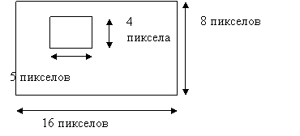

ЛАБОРАТОРНАЯ РАБОТА № 16
СПОСОБЫ ПРЕДСТАВЛЕНИЯ
ИНФОРМАЦИИ
Цель работы — изучить способы представления числовых, текстовых данных, основных арифметических и логических операций над ними.
Теоретическая часть
Внутреннее представление данных
Двоичная форма целых чисел. Количество информации
ЭВМ является электрическим прибором. Она управляется с помощью электрических сигналов. Поэтому любые данные должны быть некоторым универсальным образом представлены в таком виде, чтобы их можно было легко перевести на «электрический» язык. Таким свойством обладают двоичная форма целых чисел. Для записи числа в двоичной форме используются только два символа 0 и 1. Эти символы легко поставить в соответствие некоторому фиксированному значению напряжения в электрических схемах ЭВМ (см. рис. 16.1).
Рис. 16.1. Поток данных в двоичной форме
Чтобы обрабатывать данные, необходимо иметь некоторый универсальный способ представления операций с целыми числами, чтобы эти операции были легко представимы на «электрическом» языке. Оказывается, что этому условию удовлетворяют три операции с двоичными числами. Это операции логического сложения «ИЛИ», логического умножения «И» и отрицания «НЕ».
Операции с двоичными числами Таблица 16.1
|
x |
y |
ИЛИ |
И |
НЕ х |
|
0 |
0 |
0 |
0 |
1 |
|
0 |
1 |
1 |
0 |
1 |
|
1 |
0 |
1 |
0 |
0 |
|
1 |
1 |
1 |
1 |
0 |
Таким образом, все данные, с которыми работают ЭВМ, представлены в виде двоичных чисел, а все действия с данными сводятся к комбинации трёх логических операций.
Пример. Рассмотрим сложение чисел 4+3. В двоичной форме эти числа будут иметь вид соответственно 0100 и 0011. Выполняя операцию логического сложения с каждым разрядом обоих чисел, получим число 0111, что является двоичным представлением числа 7.
Количество информации, соответствующее двоичному числу, называют битом [bit]. Число, которое представлено N битами называется N-битным или N-разрядным.
В дальнейшем оказалось удобным оперировать последовательностями нулей и единиц, объединённых в группы фиксированного размера.
Наибольшее значение имеет последовательность из восьми двоичных чисел - 8-разрядное число. Количество информации, соответствующее такому числу, называется байтом [byte]. Кроме того, используются группы, называемые словом [word]. Размер слова зависит от характеристик конкретной ЭВМ, но, как правило, в большинстве современных ЭВМ размер слова равен 2 байтам.
Очень часто программистам приходится непосредственно работать с двоичными числами, поэтому, чтобы упростить эту работу, часто используются шестнадцатеричное представление двоичных чисел.
Пример. Для упрощения перевода целых чисел в двоичную и шестнадцатеричную формы составляется следующая таблица:
|
Х10 |
Х2 |
Х16 |
Х10 |
Х2 |
Х16 |
|
0 |
0000 |
0 |
8 |
1000 |
8 |
|
1 |
0001 |
1 |
9 |
1001 |
9 |
|
2 |
0010 |
2 |
10 |
1010 |
A |
|
3 |
0011 |
3 |
11 |
1011 |
B |
|
4 |
0100 |
4 |
12 |
1100 |
C |
|
5 |
0101 |
5 |
13 |
1101 |
D |
|
6 |
0110 |
6 |
14 |
1110 |
E |
|
7 |
0111 |
7 |
15 |
1111 |
F |
4310= 2В16 = 001010112
Таким образом, первая задача, которая ставится в информатике – это задача представления любых данных в форме целых чисел (в цифровой форме).
Цифровое представление символов
Правило цифрового представления символов следующее: каждому символу ставится в соответствие некоторое целое число, то есть каждый символ нумеруется.
Пример. Рассмотрим последовательность строчных букв русского алфавита: а, б, в, г, д, е, ё, ж, з, и, й, к, л, м, н, о, п, р, с, т, у, ф, х, ц, ч, ш, щ, ъ, ы, ь, э, ю, я. Присвоив каждой букве номер от 0 до 33, получим простейший способ представления символов. Последнее число - 32 в двоичной форме имеет вид 100000, то есть для хранения символа в памяти понадобится 6 бит. Так как с помощью шести бит можно представить число 26 – 1 = 63, то шести бит будет достаточно для представления 64 букв.
Имеются разные стандарты для представления символов, которые отличаются лишь порядком нумерации символов. Наиболее распространён американский стандартный код для информационного обмена - ASCII [American Standard Code for Information Interchange] введён в США в 1963г. В 1977 году в несколько модифицированном виде он был принят в качестве всемирного стандарта Международной организации стандартов [International Standards Organization - ISO] под названием ISO-646. Согласно этому стандарту каждому символу поставлено в соответствие число от 0 до 255. Символы от 0 до 127 – латинские буквы, цифры и знаки препинания – составляют постоянную часть таблицы. Остальные символы используются для представления национальных алфавитов. Конкретный состав этих символов определяется кодовой страницей. В русской версии ОС Windows95 используется кодовая страница 866. В ОС Linux для представления русских букв более употребительна кодировка КОИ-8.
Недостатки такого способа кодировки национального алфавита очевидны. Во-первых, невозможно одновременное представление русских и, например, французских букв. Во-вторых, такая кодировка совершенно непригодна для представления китайских или японских иероглифов. В 1991 году была создана некоммерческая организация Unicode, в которую входят представители ряда фирм (Borland, IBM, Lotus, Microsoft, Novell, Sun, WordPerfect и др.), и которая занимается развитием и внедрением нового стандарта. Кодировка Unicode использует 16 разрядов и может содержать 65536 символов. Это символы большинства народов мира, элементы иероглифов, спецсимволы, 5000 мест для частного использования, резерв из 30000 мест.
Пример
ASCII-код символа A = 6510 = 4116 = 010001112;
ASCII-код символа G = 7110 = 4716 = 010001112;
ASCII-код символа Z = 9010 = 5A16 = 010110102.
ASCII-код символа C = 6710 = 4316 = 011001112
Unicode-код символа C = 6710 = 00000000011001112.
Цифровое представление вещественных чисел
Для того, чтобы представить вещественное число в виде набора целых чисел, его необходимо привести к нормализованной форме:
x = M*2P;
где M - называется мантиссой (дробной частью), а P - экспонентой (порядком).
После этого мантисса и порядок переводятся в двоичное представление. В памяти ЭВМ вещественное число хранится в виде:
здесь S – признак знака. Поэтому необходимо также определить, какой размер памяти будет отведён под все три части нормализованного числа.
Далее должны быть определены правила (алгоритмы), по которым будут выполняться арифметические операции с нормализованными вещественными числами. Совокупность таких алгоритмов, а также правил представления чисел в нормализованной форме называется арифметикой плавающих чисел [floating point number].
Поскольку размер памяти, отводимый под мантиссу и порядок, ограничен, то вещественные числа представляются с некоторой погрешностью (точность десятичных цифр) и имеют ограниченный диапазон изменения. Чем больше размер памяти для плавающего числа, тем точнее можно представить вещественное число. Поэтому для пользователя основными характеристиками арифметики плавающего числа являются длина числа (размер), измеряемая в битах, и точность представления числа. По точности представления вещественных чисел различают плавающие числа одинарной и двойной точности [single and double precision].
Пример. Рассмотрим принцип цифрового представления вещественного числа 15,375. Пусть под мантиссу отведено 5 десятичных разрядов, а под порядок – 2 разряда. Представим число в нормализованной форме: 15,375 » 1,9219*23. Так как в нормализованной форме первая цифра всегда равна единице, то её можно не хранить. Тогда число будет представлено в виде целого числа 9219003 с относительной погрешностью не более 10-4, то есть число верных десятичных чисел равно 4. В памяти ЭВМ это число будет храниться в двоичной форме, причём можно легко подсчитать, что для хранения такого числа потребуется 27 бит. Максимальное число, которое можно представить таким образом - 9999999=1,99999*1099, а минимальное, не равное нулю - 0000100=0,00001. Если предусмотреть один бит для хранения знака порядка, то минимально представляемое число будет равно 00001-99, то есть 0,00001*10-99.
При попытке выйти за допустимый диапазон ЭВМ выдаст сообщение о переполнении (underflow или overflow).
Конкретные характеристики арифметики различны для разных стандартов. Для ПЭВМ наиболее распространённым является IEEE-стандарт (IEEE-754-1985) [Institute of Electrical and Electronic Engineers], согласно которому вещественные числа представляются в трёх основных формах (см. табл. 1.2).
Данные с плавающей точкой по IEEE-стандарту Таблица 16.2
|
Тип |
Размер, бит |
Диапазон изменения чисел максимум минимум |
Точность десятичн. цифр |
Машинное e |
|
|
single |
32 |
3.4*10-38 |
3.4*1038 |
6 |
1,192*10-7 |
|
double |
64 |
1.7*10-308 |
1.7*10308 |
15 |
2,221*10-16 |
|
long double |
80 |
3.4*10-4932 |
3.4*104932 |
19 |
1,084*10-19 |
Здесь нужно заметить, что характеристики плавающего числа двойной точности будут зависеть от той арифметики, которая используется на конкретной ЭВМ.
Пример. Запишем число 15,375 в двоичном виде:
15.375 = 1111.0112 = 1.111011*2112
Тогда согласно стандарту IEEE число будет представляться:
single
15,375 = 0 1000.0001.0 111.0110.0000.0000.0000.00002 = 4176000016
long double
15,375 = 0 1000.0000.00010. 1110.1100.0000.0000. … 00002 = 402ЕС0000000000016.
Особенности плавающей арифметики могут существенно влиять на результаты расчётов, вплоть до того, что погрешность может сделать невозможным получение какого-либо результата вообще, поэтому знание деталей реализации арифметики плавающих чисел является необходимым для программистов.
Пример. Существует особая характеристика плавающей арифметики – машинное эпсилон. Это число, которое определяется как
.
Для плавающего числа единичной точности (по IEEE стандарту):
.
Это значит, если написать программу на языке BASIC:
a=1.2
b=1.e-7
print a+b
то результат, который выдаст программа, будет равен 1.2.
Поэтому программы, учитывающие особенности плавающей арифметики могут трактовать все числа, меньшие, чем машинное эпсилон, практически равными нулю.
Цифровое представление изображений
Под изображением будем понимать прямоугольную область, закрашенную непрерывно изменяющимся цветом. Поэтому для представления изображений в целых числах необходимо отдельно дискретизировать прямоугольную область и цвет.
Для описания области она разбивается на множество точечных элементов – пикселов [pixel]. Само множество называется растром [bit map, dot matrix, raster] (см. рис. 16.2), а изображения, которые формируются на основе растра, называются растровыми.
Рис. 16. 2. Дискретизация области изображения
Число пикселов называется разрешением [resolution]. Часто встречаются значения 640х480, 800х600, 1024х768, 1280х1024. Каждый пиксел нумеруется, начиная с нуля слева направо и сверху вниз.
Для представления цвета используются цветовые модели. Цветовая модель [color model] это правило, по которому может быть вычислен цвет. Самая простая цветовая модель – битовая. В ней для описания цвета каждого пиксела (чёрного или белого) используется всего один бит. Для представления полноцветных изображений используются несколько более сложных моделей. Известно, что любой цвет может быть представлен как сумма трёх основных цветов: красного, зелёного и синего. Если интенсивность каждого цвета представить числом, то любой цвет будет выражаться через набор из трёх чисел. Так определяется наиболее известная цветовая RGB-модель. На каждое число отводится один байт. Так можно представить 224 цвета, то есть примерно 16,7 млн. цветов. Белый цвет в этой модели представляется как (1,1,1), чёрный – (0,0,0), красный (1,0,0), синий (0,0,1). Жёлтый цвет является комбинацией красного и зелёного и потому представляется как (1,1,0).
Пример. Пусть имеется изображение вида

Будем считать, что белый цвет представляется нулём, а чёрный – единицей, тогда в однобитовой модели такое изображение представится в виде:
0000000000000000
0000000000000000
0000111110000000
0000100010000000
0000100010000000
0000111110000000
0000000000000000
0000000000000000
В шестнадцатеричном виде этот двоичный набор будет выглядеть так:
00 00 00 00 0F 80 08 80 08 80 0F 80 00 00 00 00
Всего для хранения такого изображения потребуется 16 байт.
Данное изображение легко преобразовать в RGB-модель. Достаточно заменить все нули тройками (1,1,1), а все единицы - тройками (0,0,0). Тогда получим следующее шестнадцатеричное представление изображения:
FF FF FF FF FF FF FF FF FF FF FF FF FF F0 00 1F FF FF
FF F1 FF 1F FF FF FF F1 FF 1F FF FF FF F0 00 1F FF FF
FF FF FF FF FF FF FF FF FF FF FF FF
Для хранения такого изображения потребуется 48 байт.
Цветовая модель RGB [Red-Green-Blue] была стандартизирована в 1931 г. и впервые использована в цветном телевидении. Модель RGB является аддитивной моделью, то есть цвет получается в результате сложения базовых цветов. Существуют и другие цветовые модели, которые для ряда задач оказываются более предпочтительными, чем RGB-модель. Например, для представления цвета в принтере используется субтрактивная CMY-модель [Cyan-Magenta-Yellow], цвет в которой получается в результате вычитания базовых цветов из белого цвета. Белому цвету в этой модели соответствует (0,0,0), чёрному - (1,1,1), голубому - (1,0,0), сиреневому - (0,1,0), жёлтому - (0,0,1). В цветовой модели HSV [Hue-Saturation-Value] цвет представляется через цвет, насыщенность и значение, а в модели HLS [Hue-Lightness-Saturation] через оттенок, яркость и насыщенность. Современные графические редакторы, как правило, могут работать с несколькими цветовыми моделями.
Звук можно описать в виде совокупности синусоидальных волн определённых частоты и амплитуды. Частота волны определяет высоту звукового тона, амплитуда – громкость звука. Частота измеряется в герцах (Гц [Hz]). Диапазон слышимости для человека составляет от 20 Гц до 17000 Гц (или 17 кГц).
Рис. 16. 3. Дискретизация звукового сигнала
Задача цифрового представления звука, таким образом, сводится к задаче описания синусоидальной кривой. Принцип такого представления изображён на рис. 16. 2.
Каждой дискретной выборке присваивается целое число – значение амплитуды. Количество выборок в секунду называется частотой выборки [sampling rate]. Количество возможных значений амплитуды называется точностью выборки [sampling size]. Таким образом, звуковая волна представляется в виде ступенчатой кривой. Ширина ступеньки тем меньше, чем больше частота выборки, а высота ступеньки тем меньше, чем больше точность выборки.
Пример. Возможности наиболее распространённой современной аппаратуры предусматривают работу с частотой выборки до 44,1 кГц, что позволяет правильно описывать звук частотой до 22,05 кГц. Точность выборки имеет всего два значения 8 бит и 16 бит. То есть для представления амплитуды 8-битного звука используется 28 = 256 уровней амплитуды.
Внутреннее представление данных характеризуется избыточностью. Например, при кодировании символов русского алфавита можно учесть частоту, с которой эти символы встречаются в предложениях русского языка. Тогда для цифрового представления текста потребуется меньшее количество информации. Объём данных имеет большое значение не только для хранения, но также непосредственно влияет на скорость передачи данных по каналам вычислительных сетей. Поэтому были разработаны специальные методы (алгоритмы сжатия данных [data compression]), с помощью которых можно существенно уменьшить объём данных. Существуют как универсальные алгоритмы, которые рассматривают данные как простую последовательность битов, так и специализированные, которые предназначены для сжатия данных определённого типа (изображений, текста, звука и видео). Эффективность сжатия характеризуется коэффициентом сжатия [compression ratio], который определяется как отношение размера исходных данных к размеру сжатых. В некоторых случаях этот коэффициент достигает значения 10.
Пример. Рассмотрим принцип сжатия простейшего универсального RLE-метода. Для этого рассмотрим представление изображения, полученного в примере выше.
Особенность данного представления заключается в том, что в нём содержатся длинные последовательности подряд идущих нулей или единиц. В RLE-методе предлагается ставить сначала значение числа повторений, а затем повторяющегося числа. Тогда сжатое закодированное изображение получит вид:
С4 00 0F 80 08 80 08 80 0F 80 С4 00
Здесь число С используется как признак последовательности одинаковых символов. То есть С4 означает, что далее идёт последовательность из 4 символов. Размер хранимого изображения уменьшился с 16 до 12 байт. Коэффициент сжатия равен 1,33. Эффективность сжатия будет зависеть от размера и содержания изображения. Если то же самое изображение преобразовать в цветовую RGB-модель, то в сжатой форме оно получит вид:
СD FF F0 00 1F C3 FF F1 FF 1F C3 FF F1 FF 1F C3 FF F0 00 1F CE FF
То есть вместо 48 байт сжатое изображение занимает 22 байта, а коэффициент сжатия равен 2,18.
Алгоритмы сжатия широко применяются для более компактного хранения изображений. Для этого было разработано большое число графических форматов растровых изображений.
Пример. Наиболее популярными являются графические форматы: BMP [Bit MaP], PCX, GIF [Graphics Interchange Format], TIFF [Tagged Image File Format], JPEG [Joint Photographic Experts Group], которые по существу различаются между собой используемыми методами сжатия. Форматы BMP и PCX используют RLE-алгоритм, форматы GIF и TIFF – LZW-алгоритм, JPEG использует одноимённый алгоритм сжатия.
Звук и видео также требуют для своего цифрового представления очень большого объёма памяти, поэтому без алгоритмов сжатия работа с видео и звуковыми данными была бы невозможной. Фактическим стандартом для представления звука стал формат MP3, а для представления видеоданных – формат MPEG.
Любые данные, представленные в виде совокупности целых чисел, хранятся в памяти ЭВМ в виде файлов. Файл [file] – именованная целостная совокупность данных, причём не имеет значения, каких именно данных. Для файла данные – это лишь набор целых чисел в двоичной форме, поэтому файл – это просто последовательность байтов. Для пользователя имеют значение лишь два признака, которые характеризуют файл как таковой: имя файла и его размер. Размер файлов измеряется в байтах.
Рис. 16. 3. Дерево каталогов
Как правило, файлы сортируются пользователем согласно определённым признакам по группам. Список такой группы называется каталогом [directory]. Таким образом, организуется особая иерархическая структура – дерево каталогов (см. рис. 16. 3 – имена каталогов подчёркнуты).
Вершина такого дерева называется корневым каталогом [root directory]. Имя корневого каталога всегда строго определено (на рис. 16. 3 - C:\) и зависит от файловой системы .
Многие объекты в конкретных прикладных задачах могут быть представлены не в двоичной форме, а в виде сложной информационной структуры. Например, чертёж детали можно представить в виде совокупности отрезков прямых. Тогда в памяти ЭВМ нужно будет хранить не растр, а совокупность вещественных чисел, описывающих координаты концов отрезков.
Формализованное описание информационных структур и операций над ними называется моделью данных [data model].
Пример. Например, для описания шрифтов применяются три модели: битовая, векторная и true-type. Рассмотрим, как можно представить символ «С» с помощью битовой модели.
Битовая модель использует тот же принцип, что и битовая цветовая модель для растровых изображений. Каждому символу отводится матрица фиксированного размера. Пусть матрица имеет размер 8х10:
После такого графического представления символа, его можно описать десятью числами, размером 1 байт каждое:
00 3С 66 С0 С0 С0 66 3С 00 00
Такие описания составляются для всех символов алфавита, цифр, знаков препинания и помещаются в один файл – файл битового шрифта. Все символы, которые выводятся в текстовом режиме, представлены посредством битовых шрифтов и записаны в ПЗУ.
Рассмотренное в примерах выше изображение можно представить через описание четырёх отрезков прямых линий, задавая координаты концов отрезков:
(4,2-8,2) (4,2-4,5) (4,5-8,5) (8,5-8,2)
Для такого описания требуется 16 чисел. В результате появляется возможность различных геометрических преобразований изображения (масштабирование, повороты, растяжения и др.). Такой способ описания изображений называется векторным и широко используется в проектировании. Но нужно чётко понимать, что при выводе на экран монитора данное изображение будет представлено в растровой форме.
В реальных задачах для описания данных требуется очень много файлов, причём данные, содержащиеся в этих файлах, некоторым образом связаны между собой. Например, описание информации по деятельности некоторой судоходной компании будет включать в себя технические данные по судам компании, дислокацию судов, данные по участкам водных путей, размерам канальных и портовых сборов, данные по фрахтовым ставкам, данные для определения эксплуатационных расходов по каждому судну и т.д. Поэтому управление файлами в таких случаях оказывается очень сложным. Чтобы преодолеть эти сложности, исходные данные должны быть организованы в базу данных [data base] – совокупность взаимосвязанных данных, сохраняемых и управляемых в соответствии с некоторыми правилами. Эти правила также называются моделью данных. Конкретное построение базы данных и используемая модель данных определяются решаемой задачей.
Пример. Существуют несколько моделей данных: сетевая, иерархическая, реляционная, объектно-ориентированная. В последнее время наиболее широко используемой является реляционная модель данных. Согласно этой модели все данные организуются в совокупность связанных таблиц.
Практическая часть
Разработать программу на С++, которая выполняет перевод из десятичной системы счисления в шестнадцатеричную и двоичную.
Пример программы, которая выполняет перевод десятичного числа в шестнадцатеричную и двоичную системы.
#include "stdafx.h"
#include <iostream>
#include "windows.h"
using namespace std;
int buff[20];
int buff2[20];
int Perevod(int n)
{
int ost = 0;
int col = 0;
for(int i = 0;i<20;i++)
{
if((n%2)== 0)buff[i]=0;
else if((n%2)!= 0)buff[i]=1;
ost = n/2;
col++;
n = ost;
if(n == 0)break;
}
int i1 = 0;
for(int j = (col-1); j >= 0; j--)
{
buff2[i1] = buff[j];
i1++;
}
return col;
}
int main()
{
SetConsoleOutputCP(1251);
int col = 0;
int chislo1=0;
int chislo=0;
int param=0;
char H[16]={'0','1','2','3','4','5','6','7','8','9','A','B','C','D','E','F'};
int D[256];
char DH[256];
cout << "Vvedite chislo v desyatichnom vide: ";
cin >> chislo;
chislo1=chislo;
int i=0;
while (chislo1/16!=0)
{
D[i]=chislo1%16;
chislo1=chislo1/16;
i++;
}
D[i]=chislo1;
int d=i;
int m=0;
for (int k=0; k<=d; k++)
{
for (int j=0; j<16; j++)
{
if (D[i]==j)
{
DH[m]=H[j];
m++;
i--;
}
}
}
cout<< "Chislo v shestnadcatirichnom vide: ";
for (int j=0; j<=d; j++)
{
cout << DH[j];
}
cout<<endl;
char buf[20];
itoa(chislo,buf,2);
col = Perevod(chislo);
cout<<"Сhislo v dvoichnom vide: ";
for(int k = 0; k < col;k++)
{
cout<<buff2[k];
}
cout << endl<<endl;
return 0;
}
Рис. 16. 4. Результат выполнения программы
Контрольные вопросы
1. Для чего необходимо двоичное представление чисел?
2. Как называют количество информации, соответствующее двоичному числу?
3. Правило цифрового представления символов.
4. Наиболее распространенный стандартный код для представления символов. Принцип работы.
5. Какие числа называются плавающими?
6. Как осуществляется цифровое представления изображений?
7. Для чего необходимы алгоритмы сжатия данных? Принцип их работы.
8. В виде чего хранятся любые данные в памяти ЭВМ? Что такое каталог?
9. Для чего нужна модель данных?